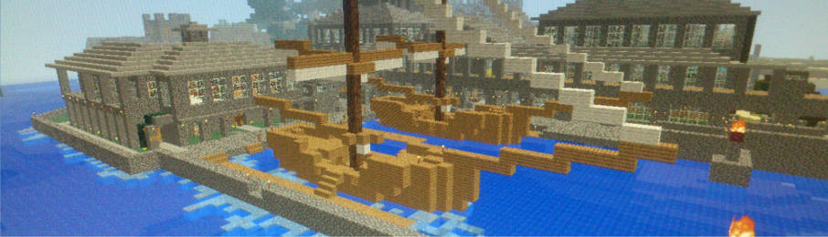
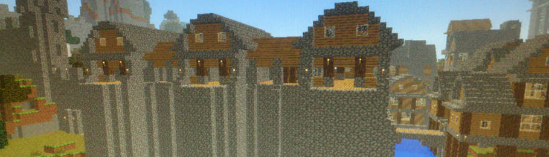
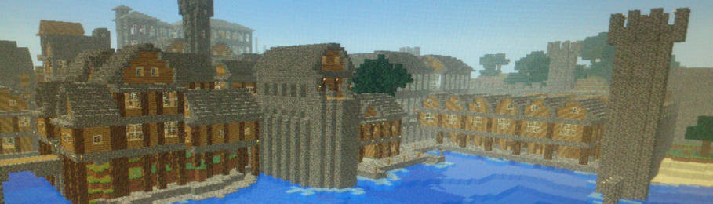
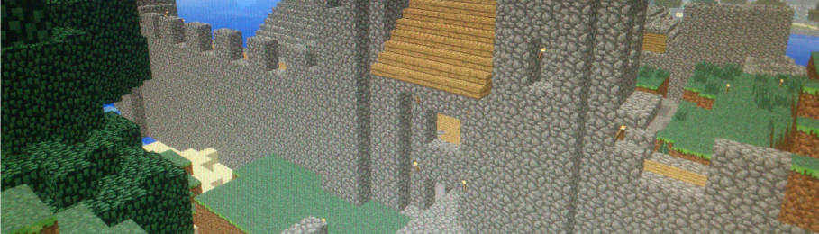
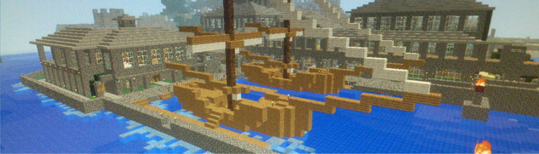
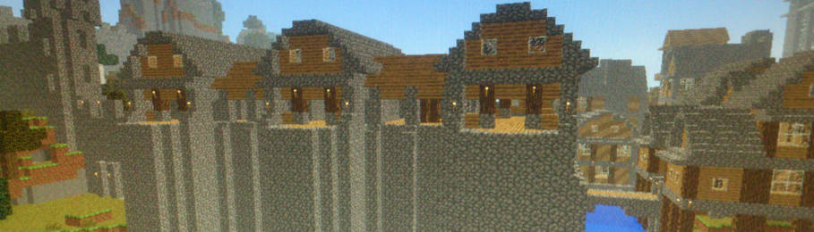
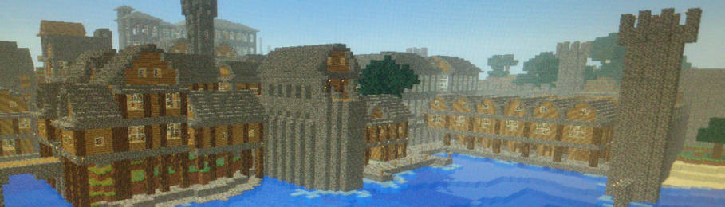
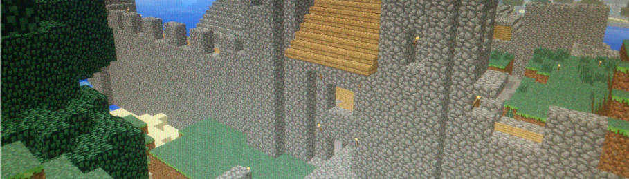

En el año 857d.c. Royal-Town se estableció como comunidad de la ciudad estado de York como puerto para la llegada de especias desde extremo oriente. en el año 927 Royal-Town se consolido como ciudad estado independiente y Toc el grande se autoproclamo rey de Royal-Town en los años siguientes Royal-Town creció a económicamente a gran velocidad llegando a convertirse en la principal entrada de especias de toda la isla de Bretaña.
En el año 1129 tras una gran tensión entre Royal-Town y York, York ataco Royal-Town diezmando a la población haciendo caer a la ciudad en el olvido.
En el año 1998 un equipo arqueológico descubrió la ciudad y se a convertido en atracción turística y patrimonio de la humanidad por la UNESCO.